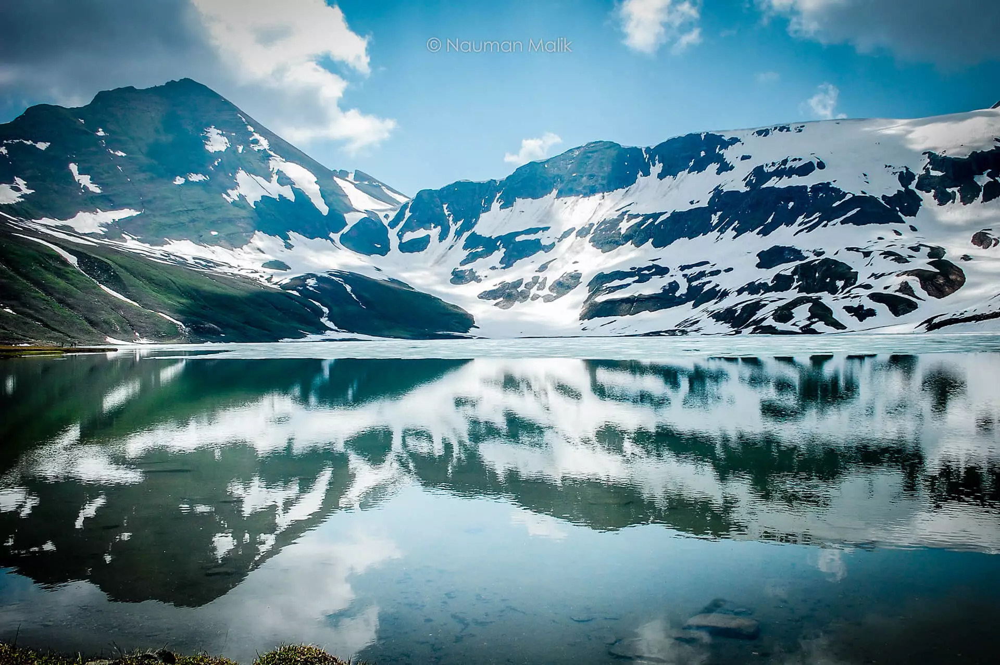
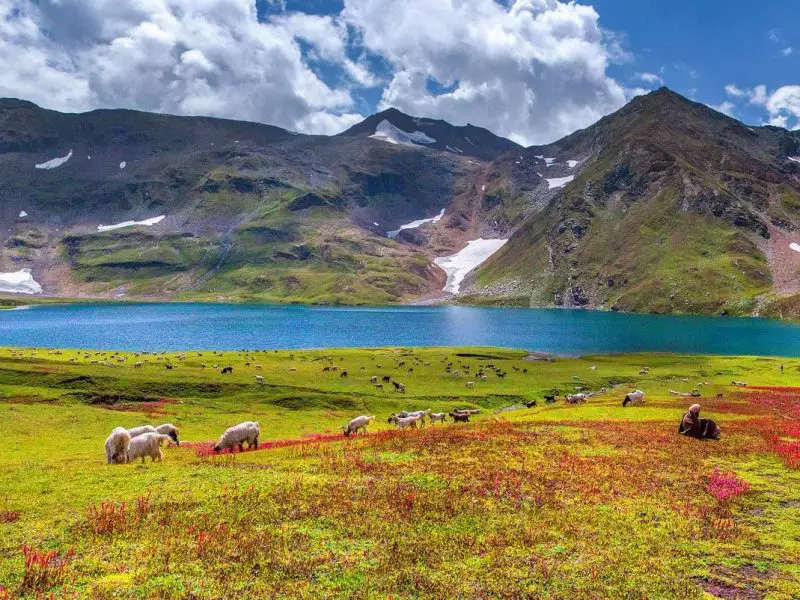

Saral Lake is in the alluring Neelam Valley, Azad Kashmir, and is at an altitude of 13,600 feet. People visiting Azad Kashmir can travel to this lake via Sharda. It is accessible on a 4*4 jeep on a track that leads to Gumut National Park. From Gumut, you will go on a hiking track to witness the magnificent views of Saral Lake. A good thing is that, like Ratti Gali, Saral Lake is very peaceful and is a place outside of this world. Here you will get peace and enjoy the scenic beauty of this lake. Although the trek towards Saral lake is difficult, but the effort you made to reach there is totally worth it. Another path leading to Saral Lake is from Dudipatsar Lake. This heavenly Dudipatsar Lake is located in the Kaghan Valley, District Mansehra, Khyber Pakhtunkhwa, Pakistan. It is situated at an elevation of 3,800 meters and is surrounded by beautiful mountains. The lake’s water is greenish-blue and very cold.

The trekkers and adventure lovers usually go through Dudipatsar Lake to reach the Saral Lake. trekking to Dudipatsar lake is one of the most beautiful treks in Kaghan Valley. A trek of lush green meadows with white streams will make you reach a small town Mullah ki Basti. From this town, Dusipatsar lake is almost 2-3 hours away. To go to Saral Lake from Dudipatsar Lake, you will have to pass the Saral Pass i.e. 4,200m high and is in the right of Mullah ki Basti. A trek of 12 kilometers will bring you the mesmerizing Saral Lake.
Tourists enjoy camping at both lakes. While camping, they enjoy bonfire, sing songs, and enjoy a night under a sky full of stars.